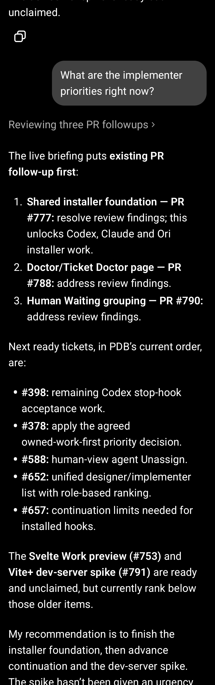
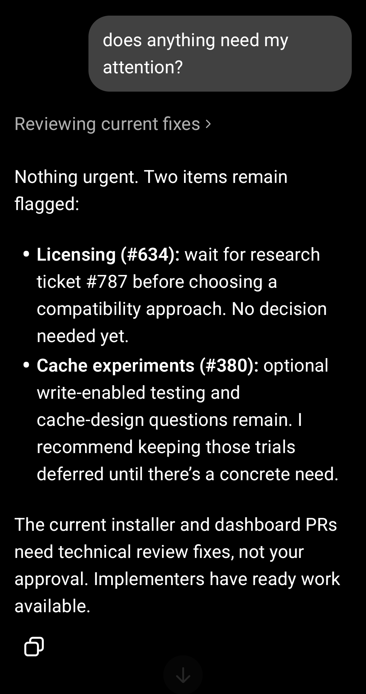
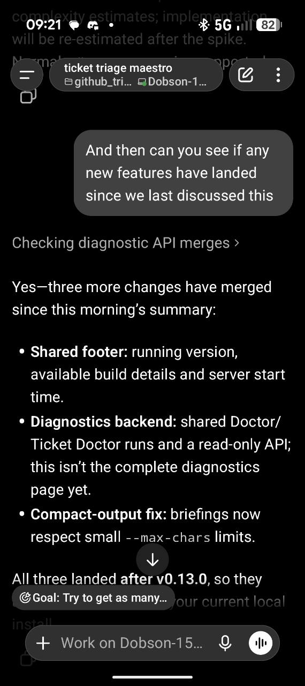

Different roles / shared evidence
Keep the work moving.
The useful next step depends on what you are responsible for. These are workflow stories, not claims that the example actions happened in a live repository.
Local preview · no documented release
Implementer: finish the delivery
You have opened a pull request and could start another issue. First, ask PDB what needs attention. A current review finding or failed required check may be more important than new pickup. Follow its source link, inspect the current head and address the substantive problem before treating the work as delivered.
Once your delivery is complete, inspect eligible work and native blockers. A small ticket that removes the last blocker for several dependants can matter more than a newly opened feature. Check ownership before claiming, use the project's supported coordination commands and keep the ticket updated when a concrete blocker prevents progress.
Designer: turn uncertainty into a contract
An implementer cannot responsibly guess a product decision. The designer view brings design work, questions and assessments into focus. Read the request and its downstream impact, resolve the decision in a durable contract, and make the implementation handoff clear enough to review.
An assessment is evidence about benefit or complexity, not a claim and not an automatic unblock. Keep assumptions visible and revise them when new information changes the expected work. A merged design can enable implementation without completing the feature's acceptance or its empirical follow-up.
Human director: supply the missing input
You do not need another generic list of every open issue. You need the question, sign-off or addressed request that needs your input, with a link to the work it blocks. A human routing view helps surface those requests without pretending your routing name is authentication or a new kind of agent identity.
Optional rebrief integrations can reduce repeated prompts after a natural stop, within the client's verified limits. They do not eliminate judgment, authorize releases or override your interruption. When a client lacks a tested native boundary, ordinary CLI or MCP use still provides a useful briefing. Keep the distinction between a suggested next action and an action actually completed visible in your workflow.
PDB IN CONVERSATION
Project briefings, in conversation.
An assistant uses PDB evidence to explain priorities, identify decisions for a human and summarise project changes. These conversations from 17 November 2026 are historical examples: ticket statuses, recommendations and release availability may have changed.
Select an image to view the full screenshot; the previews show only the top portion. Each caption describes the capability illustrated.


What should the implementer do next?
PDB supplies the ranked work and blocker evidence; the assistant turns it into a briefing. This example puts existing pull-request follow-up before new work and explains which fixes would unlock other tickets. Planned features mentioned in the conversation are not claims that they have shipped.
View full screenshot

Does anything need my attention?
The human-attention view helps an assistant separate decisions for the developer from work agents can continue. Here it explains why a flagged issue can wait for research instead of asking the human to decide prematurely.
View full screenshot

What changed since we last spoke?
A repository catch-up becomes a concise explanation of merged changes. The assistant distinguishes completed backend work from an unfinished page, and changes on main from features available in the installed release.
View full screenshotCHECK THE EVIDENCE
A briefing, with its limits.
This preview contains no release-validated command output. The release capture pipeline supplies dated examples, coverage notices and artifact provenance before publication.